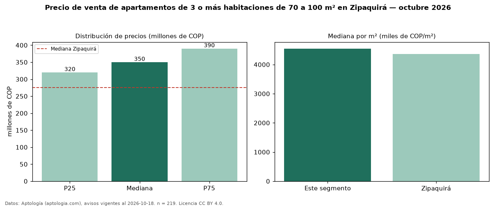

Precio de venta de apartamentos de 3 o más habitaciones de 70 a 100 m² en Zipaquirá — octubre 2026
COP 350 millones es el precio mediano de apartamentos de 3 o más habitaciones de 70 a 100 m² en venta en Zipaquirá (n = 219 avisos). Eso es 25 % más que la mediana de los apartamentos de 3 o más habitaciones en venta de Zipaquirá (COP 280 millones, n = 710); este segmento reúne el 31 % de esos avisos. Por metro cuadrado, la mediana es COP 4,55 millones/m² (n = 219), 7 % por encima de los apartamentos de 3 o más habitaciones en venta de Zipaquirá (COP 4,24 millones/m²). El área mediana anunciada es 76 m². La administración mediana declarada es COP 325.000 al mes (n = 171). El estrato más frecuente es 4 (73 % de los avisos con estrato). La mediana de todos los apartamentos en venta de Zipaquirá es COP 275 millones (+27 % de diferencia). La mitad central de los avisos va de COP 320 millones a COP 390 millones (razón 1,2), una dispersión baja. Datos: Aptología (aptologia.com), CC BY 4.0 — https://www.aptologia.com/venta/zipaquira. Archivos: PDF, CSV con las cifras y gráfica PNG.

| Avisos únicos | 219 |
|---|---|
| Percentil 25 | COP 320.000.000 |
| Mediana | COP 350.000.000 |
| Percentil 75 | COP 390.000.000 |
| Mediana por m² | COP 4.546.666 |
Fuente: avisos vigentes de portales inmobiliarios recopilados por Aptología, deduplicados (mínimo 30 avisos únicos por celda). Precios pedidos, no cerrados. Fecha: 2026-10-18.